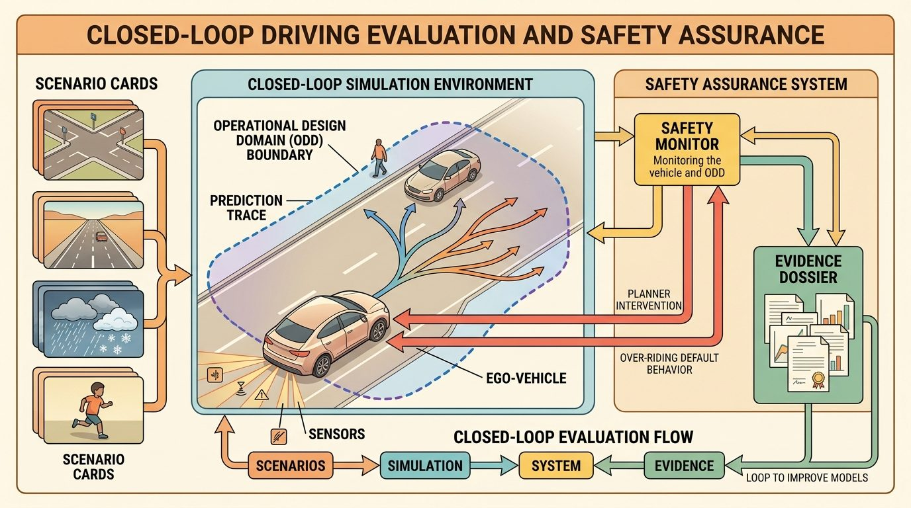
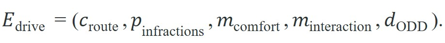
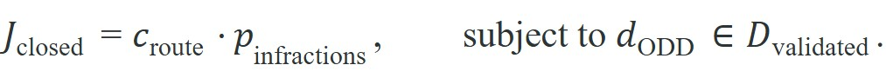
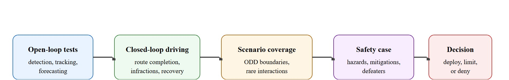

Open-loop scores measure how well you predict the world; closed-loop scores measure how the world changes once you act in it, and only the second kind keeps you safe.
On evaluating a driving stack
A vehicle that scores top-5 on a prediction leaderboard drove itself into a stopped truck during a highway merge, because the benchmark rewarded trajectory accuracy and never asked what the planner does when its own decision changes the scene. That gap between open-loop score and closed-loop survival is the central unsolved tension in deploying embodied driving systems today. This section develops the evaluation framework that closes it: closed-loop simulation metrics, infraction accounting, operational design domain bounds, and the safety-case structure that links benchmark numbers to real deployment decisions.

This section assumes familiarity with the sensor fusion and state estimation pipeline covered in section 48.2 and with the motion forecasting models introduced in section 48.3. The closed-loop evaluation framework developed here is extended in section 52.2, which treats route completion and infraction metrics for embodied systems more broadly. The safety-case reasoning introduced here recurs in Part 11 alongside robustness testing and deployment gate criteria.
Ask a driving stack the wrong question and it will answer confidently all the way into a stopped truck: score it on how well it predicts the world, and it never learns what happens when its own next move rewrites that world. Figure 48.9.1 maps the full chain this section follows to close that gap, from sensing and prediction through planning and control to the evidence artifacts that defend a deployment claim; keep it in view as the reference picture for everything below.
Modern driving stacks are usually evaluated in at least three modes. Open-loop evaluation checks perception or prediction against recorded data. Closed-loop simulation checks how the full stack behaves when its own decisions perturb the future. Safety assurance asks a different question again: which hazards remain, what mitigations exist, and what evidence shows that the mitigations actually work inside the stated operational design domain?
The first two modes are often confused. A forecasting model can improve average displacement error while still making the planner too confident in the wrong interaction pattern. One studied stack (circa 2023) dropped its open-loop displacement error by 18% across a merge benchmark, then posted a 31% higher collision rate in closed-loop because the planner read the sharper forecast as license to enter tighter gaps: this is the open-loop confidence trap, where better prediction directly causes worse driving. A smoother trajectory generator can reduce jerk (the rate of change of acceleration, felt by passengers as an abrupt jolt) while cutting safety margins. A benchmark score can rise even while the vehicle becomes easier to deadlock or easier to surprise in rare conditions.
Once the stack acts, it changes what happens next. That is why route completion, infractions, blocked-agent events, fallback activations, and controller saturation must be part of the evaluation, not mere debugging extras.
If acting on a decision changes the very distribution you are scored against, then a single scalar cannot carry that information, which is why the evaluation object has to be widened before it can be trusted.
Before going further, one term needs a definition because the rest of this section leans on it: a safety case (a structured, written argument, backed by evidence, that a system is acceptably safe for a stated use) is the document that ties benchmark numbers to a deployment decision. Closed-loop metrics, ODD bounds, and defeater analysis are not separate deliverables; they are the evidence sections inside that one safety case.
Closed-loop evaluation often reduces the stack to a score, but the useful object is a tuple of behavior and risk:

Here $c_{\mathrm{route}}$ is route completion, $p_{\mathrm{infractions}}$ aggregates collisions and rule violations, $m_{\mathrm{comfort}}$ tracks jerk and acceleration, $m_{\mathrm{interaction}}$ tracks negotiation quality such as deadlock or unsafe gap choice, and $d_{\mathrm{ODD}}$ records how close the scenario lies to the edge of the validated Operational Design Domain (ODD).
A useful benchmark formula is therefore not just "higher is better." One representative decomposition is:

This captures a core lesson from current leaderboard design: route progress matters, but only when infractions remain low and the scenario still sits inside the claimed ODD. Once the system leaves the validated domain, the benchmark score stops being a deployment argument and becomes a research observation.
The ODD matters in embodied AI because physical systems cannot generalise away from the conditions they were validated on. A sensor suite calibrated for dry asphalt reflects light differently in standing water. A planner tuned on structured urban intersections has never encountered the timing patterns of a rural uncontrolled junction. A software service degrades gracefully, but a vehicle moving at speed suffers irreversible consequences when its perception or planning model operates outside its training distribution. The ODD is therefore a hard physical contract, not a marketing caveat. Consider why this boundary matters at scale. A rare lane-merge failure that appears once per 10,000 real-world miles would typically need on the order of 50,000 on-road episodes to characterise statistically. A tightly scoped closed-loop panel targeting that exact ODD slice can, in practice, surface the same failure in far fewer episodes (roughly 300 in illustrative estimates), because the simulator can hold most variables constant except the one being stressed; the exact ratio depends heavily on how faithfully the simulator reproduces the sensor and traffic conditions of the real failure.
Mechanically, ODD bounding tags every closed-loop scenario with the environmental and traffic parameters that define it, then checks whether those parameters fall within the validated envelope before the score becomes a deployment argument. At runtime, an ODD monitor ingests sensor diagnostics (LiDAR return rate, camera exposure confidence, map localisation error) and traffic context. It compares them against the declared envelope and either confirms that the system operates within bounds or triggers a fallback policy. A score computed outside the envelope goes into a separate log and counts as exploratory data rather than safety evidence.
So far: the ODD is a hard physical boundary rather than a caveat, tightly scoped closed-loop panels can surface rare failures far more efficiently than on-road miles, and an ODD monitor is what enforces the boundary at runtime by tagging every scenario and separating in-bounds evidence from out-of-bounds exploratory data.
Figure 48.9.2 lays out this evidence flow as a block diagram, tracing how open-loop tests, closed-loop driving runs, scenario coverage, and a safety case combine into a single deploy, limit, or deny decision.

Trace through $J_{\mathrm{closed}} = c_{\mathrm{route}} \cdot p_{\mathrm{infractions}}$ with two runs of one unprotected-left-turn route. Run A: the agent completes 96% of the route ($c_{\mathrm{route}} = 0.96$) with no at-fault collision but one red-light violation. CARLA applies a fixed multiplier of 0.7 per red-light event, so $p_{\mathrm{infractions}} = 0.7$ and the score is $0.96 \times 0.7 = 0.672$. Run B: the agent completes the full route ($c_{\mathrm{route}} = 1.0$) but has one at-fault collision, multiplier 0.0, so $p_{\mathrm{infractions}} = 0.0$ and the score is $1.0 \times 0.0 = 0.0$. The lesson is concrete: Run B drove a "better" route yet scored zero, because a single at-fault collision collapses the product regardless of route progress. A naive average over routes (0.672 and 0.0 giving 0.336) hides that Run B contains a catastrophic event, which is exactly why you read the per-route JSON, not the summary.
Waymo publishes a public safety case for its driverless ride-hailing service in Phoenix and San Francisco that is structured exactly like the evidence flow in this section: an explicit ODD (mapped geofence, weather and speed bounds), closed-loop simulation across millions of scenario variations replayed in its Carcraft and SimulationCity tooling, and a hazard-and-mitigation argument benchmarked against ISO 21448 and UL 4600. Reported collision-rate comparisons against human-driver baselines are treated as one evidence layer, not the whole claim, with residual defeaters tracked per ODD slice before any geofence expansion is approved.
A defeater works exactly like a food safety inspector checking a restaurant that passed its own health score: the kitchen may look clean by the metrics it chose to measure, yet a single unchecked cold-storage unit can invalidate the entire claim. Writing the strongest defeater means actively searching for that cold-storage unit before a diner gets sick. A metric that cannot name the condition under which it fails is not safety evidence; it is a restaurant grading itself on the number of clean forks.
Writing that defeater is only possible if you have tools that can stage the failing condition in the first place, so the assurance argument rests on a concrete toolchain, each part built to interrogate a different corner of the claim.
The practical tool stack for this section is: CARLA Leaderboard, nuPlan, Waymo Open Dataset, Waymo Sim Agents or Waymax, CommonRoad, Autoware, ASAM OpenSCENARIO, OpenDRIVE. Each tool answers a different assurance question. CARLA Leaderboard tests closed-loop route completion with explicit infraction metrics. nuPlan and CommonRoad structure planning evaluation. Waymo's public challenges and simulator tools expose interaction realism. Autoware makes stack interfaces concrete. OpenSCENARIO and OpenDRIVE keep the scenario and map assumptions portable.
| Evidence layer | What to specify | What to save |
|---|---|---|
| ODD | Road type, weather, lighting, speed range, traffic density, map quality, fallback policy. | ODD card with explicit exclusions. |
| Scenario panel | Functional hazards, logical parameter ranges, concrete seeds, and actor scripts. | Scenario manifest plus reproducible seeds. |
| Closed-loop metrics | Route completion, infractions, comfort, blocked-agent events, planner timeouts, controller interventions. | One construct-matched metric artifact. |
| Safety case | Hazards, mitigations, assumptions, and strongest defeaters. | Annotated argument and failure traces. |
| Decision | Deploy, limit, or deny by ODD slice. | Written promotion decision with supporting evidence. |
Stress the system with interaction deadlock, occlusion, map error, braking-distance miscalibration, planner-induced near misses, metric gaming, ODD creep, sensor degradation, and stale fallback assumptions. These are not decorative stressors. They are the ordinary ways an autonomous vehicle (AV) stack becomes dangerous while still looking competent on a dashboard.
An AV stack may improve open-loop trajectory forecasting on a merge benchmark, then perform worse closed-loop because the planner trusts the forecast too much and enters gaps that humans would reject. The fix may live in uncertainty calibration, behavior planning, or fallback design rather than in the predictor's average error alone.
Before reading the code below, ask yourself: if your stack scored 96% route completion with only one blocked-agent event, would you deploy it? And if not, what exactly would you need to see before you would?
A tiny assurance record puts this into practice. It does not compress the whole safety case into one object; it forces the stack to admit which metric improved, which infraction still happened, and whether the claim is promotable.
# Store one closed-loop assurance summary for a driving stack.
# Keep the route metric, infraction metric, and deployment decision together.
from dataclasses import dataclass, asdict
@dataclass
class AssuranceRecord:
scenario_family: str
route_completion_pct: float
infraction_penalty: float
blocked_events: int
strongest_defeater: str
decision: str
def as_row(self) -> dict[str, object]:
return asdict(self)
record = AssuranceRecord(
scenario_family="unprotected_left_turn",
route_completion_pct=96.0,
infraction_penalty=0.91,
blocked_events=1,
strongest_defeater="late response to fast oncoming motorcycle in glare",
decision="limit_to_daylight_until_glare_panel_passes",
)
print(record.as_row())AssuranceRecord dataclass bundles route completion, infraction penalty, blocked-agent count, and the strongest defeater for the unprotected-left-turn scenario family into one printable row, so a 96% route-completion figure cannot be reported without its matching deployment limit.Expected output: the printed record should contain both performance and denial information, not just a success metric. If your assurance artifact cannot name the strongest remaining defeater and the resulting deployment limit, it is a benchmark summary rather than a safety argument.
Use CARLA Leaderboard for closed-loop route and infraction metrics, nuPlan and CommonRoad for structured planning evaluation, Waymo Sim Agents or Waymax for interaction realism studies, and Autoware to make the stack boundaries concrete. The shortcut is valuable because these tools expose public interfaces and public metrics, not because they make the safety problem disappear.
In CARLA Leaderboard 2.1 (as of 2024), the composite score is the product of route completion and infraction penalty (score = route_completion * infraction_penalty), so a single at-fault collision drives the penalty multiplier to zero and wipes out all route progress for that route. Always inspect the per-route breakdown in the JSON results file (typically results/ in the leaderboard output directory) rather than the summary table alone; aggregate scores can hide a single catastrophic route that masks a real safety gap. Set the --timeout flag conservatively (under 60 seconds) for early evaluation runs to avoid phantom high scores from scenarios where the agent simply stalls past all traffic.
A strong driving stack is not the one with no scary examples in the slide deck. It is the one whose scary examples have already been turned into explicit defeaters, limits, and regression tests.
A common assumption is that high route-completion and low-infraction scores in closed-loop simulation are sufficient to declare a driving stack safe for real deployment. That assumption is wrong. Simulators cannot yet faithfully reproduce the sensor-physics conditions that cause real failures: LiDAR rain scatter, camera HDR saturation, and radar multipath remain approximate. Simulation scenario panels are also never exhaustive. Treat closed-loop simulation results as one layer of a safety case, not the case itself. Pair them with an explicit Operational Design Domain card, written defeater analysis, and evidence that each mitigation holds under the physical sensor conditions present at deployment, not only under the simulator's rendering of those conditions.
A score that cannot name the condition under which it breaks is not a safety argument; it is a number waiting for the road to finish the sentence.
Can you explain why a planner with better open-loop prediction metrics might still deserve a narrower ODD after closed-loop evaluation?
Language-conditioned scenario generation for safety-critical coverage (2024-2026). Rather than manually scripting edge cases, recent work uses vision-language models to automatically generate, mutate, and rank adversarial scenarios by their likelihood of exposing planner failures. DriveX (Wayve, 2025) and ScenarioLLM (Tsinghua / NVIDIA, 2024) both show that LLM-directed scenario synthesis can surface long-tail ODD violations that human scenario engineers miss, while keeping generated distributions tethered to realistic sensor statistics. The gap that remains: automatically verifying that a generated scenario actually stresses the specific failure mode the LLM described, rather than producing a superficially plausible but dynamically trivial variant.
Formal safety certificates from neural planners (2024-2026). Control-barrier-function (CBF) wrappers applied at inference time now allow neural end-to-end planners to provide probabilistic safety guarantees without retraining. SafeDrive-CBF (ETH Zurich, 2024) and similar work from Carnegie Mellon's RoboSafe group demonstrate that a CBF filter can enforce collision-avoidance constraints on a diffusion-based planner at interactive speeds, producing a verifiable safety layer on top of an otherwise uninterpretable learned policy. The open challenge is extending these certificates to multi-agent scenarios where the safety of one vehicle depends on the uncertain intent of surrounding agents.
Real-to-sim sensor fidelity transfer (2024-2025). NVIDIA's OmniSim and Waymo's SensorSim 2.0 now generate LiDAR point clouds and camera HDR frames from neural radiance fields trained on real sensor logs, rather than from hand-authored asset pipelines. This brings sensor-level fidelity much closer to ISO 21448 SOTIF (Safety Of The Intended Functionality, the analysis of unsafe behavior that arises without any component failure) requirements. Remaining gaps include rain-scatter point-cloud artifacts at ranges beyond 40 m and oncoming-headlight blooming that causes camera exposure failures during unprotected left turns at dusk.
Open problem for a PhD student: Develop an automatic fidelity-gap metric that quantifies, for any neural simulator, how closely its generated LiDAR returns and camera histograms match a physical sensor model under a specified weather and lighting condition. A closed-form metric would let safety engineers certify which generated scenarios are admissible as primary safety evidence and which must be supplemented with physical-sensor test runs, directly addressing the weakest link in current closed-loop evaluation pipelines.
Closed-Loop Driving Evaluation And Safety Assurance belongs in the book because it teaches the difference between a good score and a defensible driving claim. In embodied AI, that difference is the whole game.
Take one scenario family, compute prediction metrics and closed-loop outcomes on the same panel, then write the safety argument and the strongest remaining defeater. End with a deployment decision that is narrower than the full ODD unless the evidence really supports the full claim.
Goal: see for yourself that a lower prediction error does not guarantee safer driving once the agent acts. Tools needed: Python, pip install highway-env gymnasium (the highway-env simulator and Gymnasium). Steps: load the highway-v0 environment, run two policies over 100 episodes each: (1) an aggressive policy that accepts tight merge gaps, mimicking a planner that trusts a sharp forecast, and (2) a conservative policy that keeps larger headway. Log route progress (distance travelled), collision count, and minimum time-to-collision per episode into a single CSV. What to vary: the gap-acceptance threshold and the simulated traffic density (set vehicles_count from 20 to 50). What to observe: the aggressive policy will usually post higher mean route progress yet a markedly higher collision rate at high density, while minimum time-to-collision shrinks. Plot collision rate against gap threshold and confirm the crossover point where "more progress" starts costing safety. End by writing one defeater sentence naming the density and gap setting where the aggressive policy fails most.
Beginner (weekend): Build a minimal closed-loop assurance record logger in Python using Gymnasium with a simple highway-env driving task: run an agent for 50 episodes, collect route completion and collision counts in a single CSV artifact, then write one explicit defeater sentence describing the scenario class where the agent most often fails. The key challenge is resisting the urge to tune the agent before finishing the logging infrastructure, because the measurement system must exist before the comparison means anything.
Intermediate (1 to 2 weeks): Implement an ODD monitor for a CARLA Leaderboard agent that tags every closed-loop episode with environmental parameters (weather preset, time of day, traffic density) and refuses to count out-of-ODD episodes toward the deployment score. The key challenge is defining a reproducible ODD card in code before running any scenarios, then enforcing it automatically so that high scores from easy weather presets cannot silently inflate the aggregate route-completion metric.
Intermediate-plus (2 weeks): Use ROS2 and Autoware to replay a real or simulated near-miss scenario, instrument the planner with a blocked-agent event counter and a controller-intervention flag, and produce an AssuranceRecord dataclass for each replay that includes the strongest defeater and a binary deploy-or-limit decision. The key challenge is wiring the metric extraction into the ROS2 topic graph so that the assurance record is generated automatically at the end of every replay rather than filled in manually after the fact.
CARLA Autonomous Driving Leaderboard. https://leaderboard.carla.org/
Current closed-loop benchmark with explicit route-completion and infraction metrics, including the 2.1 scoring update.
Waymo Open Dataset challenges. https://waymo.com/open/challenges/
Official 2026 note that leaderboards remain active even when formal challenge cycles pause, useful for current benchmark positioning.
Waymo Sim Agents challenge. https://waymo.com/research/the-waymo-open-sim-agents-challenge/
Public reference for interaction-realistic simulation metrics in autonomous driving.
Waymax. https://waymo.com/research/waymax/
Waymo's accelerated simulator for behavior research on motion-dataset scenarios.
Autoware documentation. https://autowarefoundation.github.io/autoware-documentation/main/home/
Open-source driving-stack documentation from sensing through control and simulation.
ISO 21448, Safety of the Intended Functionality. https://www.iso.org/standard/77490.html
Reference standard for reasoning about unsafe behavior without a component failure.
UL 4600 overview. https://users.ece.cmu.edu/~koopman/ul4600/index.html
Accessible overview of an assurance-oriented safety standard for autonomy.
Continue to Chapter 49: Multi-Agent Embodied AI, where this contract becomes the input to the next embodied capability.